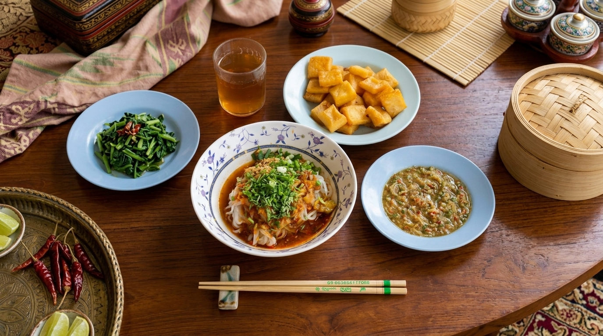

ရှမ်းခေါက်ဆွဲ
ခရမ်းချဉ်သီး၊ ကြက်သွန်နီ၊ ဂျင်း၊ ကြက်သွန်ဖြူတိုကို ဆီသတ်ပြီး နုပ်နုပ်စဉ်းထားတဲ့ အသားနဲ့ရောကာ အရသာရှိအောင် လုံးချက်ပါ။ ခေါက်ဆွဲဖတ်ကို ရေနွေးပူပူမှာ ခဏပြုတ်ပြီး ရေအေးနဲ့ ဆေးကာ ပန်းကန်ထဲထည့်ပါ။ ခေါက်ဆွဲဖတ်ပေါ်မှာ ချက်ထားတဲ့ အသားဟင်း၊ မြေပဲလှော်ထောင်း၊ ကြက်သွန်မြိတ်တို တင်ပါ။ ပြီးရင် ဟင်းရည်ကြည်ပူပူလေး ဆမ်းပြီး ရှမ်းချဉ်နဲ့ တွဲဖက်သုံးဆောင်နိုင်ပါပြီ။
ရှမ်းခေါက်ဆွဲဟာ ရှမ်းပြည်နယ်ရဲ့ ရှေးကျတဲ့ သမိုင်းကြောင်းနဲ့အတူ စတင်ပေါ်ပေါက်လာခဲ့တာပါ။ ရှေးယခင် ရှမ်းစော်ဘွားများလက်ထက်ကတည်းက နန်းတွင်းစားသောက်ဖွယ်ရာအဖြစ်ရော၊ ပြည်သူတွေရဲ့ နေ့စဉ်စားသောက်ဖွယ်ရာအဖြစ်ပါ တည်ရှိခဲ့ပါတယ်။ ရှမ်းပြည်နယ်ရဲ့ အေးမြတဲ့ ရာသီဥတုနဲ့ လိုက်ဖက်အောင် ပူပူစပ်စပ်လေး ချက်စားရာကနေ မြန်မာတစ်နိုင်ငံလုံးက နှစ်ခြိုက်ကြတဲ့ ကိုယ်စားပြု အစားအစာတစ်ခု ဖြစ်လာခဲ့ပါတယ်။
အာဟာရပြည့်ဝခြင်း: ကာဗိုဟိုက်ဒရိတ် (ခေါက်ဆွဲ)၊ ပရိုတင်း (အသား) နဲ့ ဗီတာမင် (ခရမ်းချဉ်သီး) တို စုံလင်စွာ ပါဝင်လို အာဟာရဖြစ်စေပါတယ်။ ခံတွင်းလိုက်ခြင်း: အချို၊ အချဉ်၊ အစပ် အရသာစုံလို အစာစားချင်စိတ်ကို ပိုမိုဖြစ်ပေါ်စေပြီး အအေးမိနေသူတွေအတွက်လည်း သင့်တော်ပါတယ်။ ဆိုးကျိုး: ဆီများခြင်း: အသားဟင်း ချက်တဲ့အခါ ဆီအသုံးများတတ်လို အဆီများတဲ့အစားအစာ ဆင်ခြင်ရသူတွေ သတိထားသင့်ပါတယ်။ ဆိုဒီယမ် (ဆား) များခြင်း: ဟင်းရည်နဲ့ ရှမ်းချဉ်မှာ ဆားပါဝင်မှု များနိုင်တာကြောင့် သွေးတိုးရှိသူတွေ သတိထားစားသုံးသင့်ပါတယ်။
အဓိက: ခေါက်ဆွဲဖတ် (ဆန်ညှပ်ဖတ် - အစို သိုမဟုတ် အခြောက်)။
အသား: ကြက်သား (သို) ဝက်သား (နုပ်နုပ်စဉ်းထားတာ)။
အဆာပလာ: ခရမ်းချဉ်သီး (အဓိကကျပါတယ်)၊ ကြက်သွန်နီ၊ ကြက်သွန်ဖြူ၊ ဂျင်း၊ မြေပဲလှော်ထောင်း။
တွဲဖက်: ရှမ်းချဉ် (မုံညင်းချဉ်)၊ ငါးဖယ်ကြော်၊ ဝက်အူချောင်းကြော်၊ နံနံပင်၊ ကြက်သွန်မြိတ်။